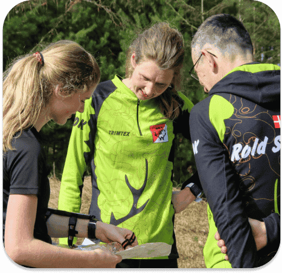
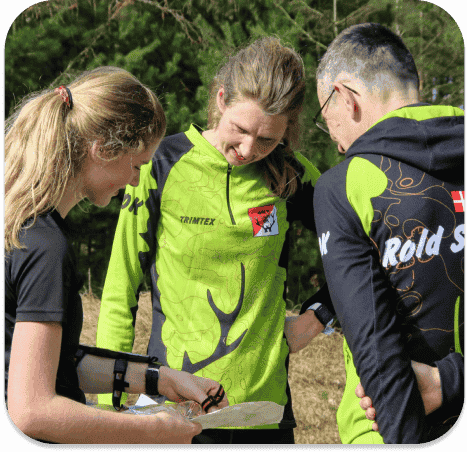

Hvem er vi?
Ofte forkorter vi klubbens navn til Rold Skov OK eller blot RSOK. Det samme gælder orienteringsløb, som vi ofte kalder o-løb.
Klubben tæller knapt 200 medlemmer, der dyrker orienteringsløb på forskellige niveauer - lige fra elite til motion for alle aldre.
Det, der adskiller ROSK fra mange andre klubber, er vores unikke beliggenhed med Rold Skov lige udenfor døren. Skoven er statsejet, hvilket gør det lettere for os at få tilladelse til at løbe der. I klubben lægger vi stor vægt på at styrke fællesskabet, mens vi er aktive og socialt engagerede sammen. For mange medlemmer er klubben et frirum, hvor de både kan træne og være sammen med andre. Hver tirsdag inviterer vi til fællesspisning, hvor det sociale samvær er i fokus.


Lidt historie om klubben
RSOK er en orienteringsklub, som har eksisteret siden vinteren 1942, hvor klubben blev stiftet med især vinteraktiviteter som skiløb og skøjtning på programmet. Det hører også med til klubbens historie, at flere af dem, som dengang stiftede klubben, var aktive i modstandsbevægelsen, og derfor brugte idrætsaktiviteterne som dække for modstanden mod besættelsesmagten. Se video forneden, hvor klubformanden i 2018 Ole Jensen fortæller om historie bag klubhuset, i et indslag fra P4 Nordjylland.
Sidenhen både voksede og faldt antallet af medlemmer. Sidstnævnte så meget at klubben faktisk blev genstartet ikke mindre end 2 gange, men det ændrede nu ikke på, at vi fejrede klubbens 75-års jubilæum i 2017 idet den på intet tidspunkt har været helt nedlagt. Så vi er både en klub, der har rundet de 80 år, men også en klub med masser af fornyelse og nye moderne idéer.
Renovering af klubhus i 2018
Renovering af klubhus i 2018
Klubformand Ole Jensen blev fredag morgen interviewet om planerne for et nyt klubhus af P4 Nordjylland. Hele indslaget kan høres i P4 Nordjyllands app, hvis man spoler frem til ca. kl. 8:15 eller klikker på linket i kommentarerne

Billeder af renoveringen


 
